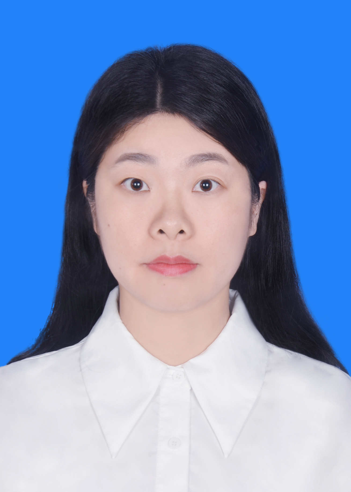

南昌大学护理学院讲师 · 社区护理教研室
研究方向：肿瘤护理 · 家庭健康促进

陈玉卿，护理学博士，2024 年起任教于南昌大学护理学院，从事护理学教学与科研工作。 主要研究方向为肿瘤护理与家庭健康促进，关注癌症患者及其家庭照顾者的症状管理与生活质量。
Yuqing Chen is a lecturer at the School of Nursing, Nanchang University. Her research focuses on oncology nursing and family health promotion, with particular attention to symptom management and quality of life among cancer patients and their family caregivers.
主要研究领域为肿瘤护理与家庭健康促进， 关注癌症患者与家庭照顾者的症状管理体验、生活质量与二元自我护理。
Research interests: oncology nursing, family health promotion, symptom management, and dyadic self-care among cancer patients and their family caregivers.
任职于社区护理教研室，承担护理学专业课程教学与实践指导工作。 关注护理教学方法创新，曾在护理研究期刊发表关于 高仿真模拟人在护理教学中的应用的教学研究论文。
Affiliated with the Community Nursing Teaching Section, I teach undergraduate nursing courses and supervise clinical practice. My teaching interests include innovative methods such as high-fidelity simulation in nursing education.
欢迎对肿瘤护理、家庭健康促进感兴趣的同学与同行来信交流。
Feel free to reach out for academic discussion or research collaboration.